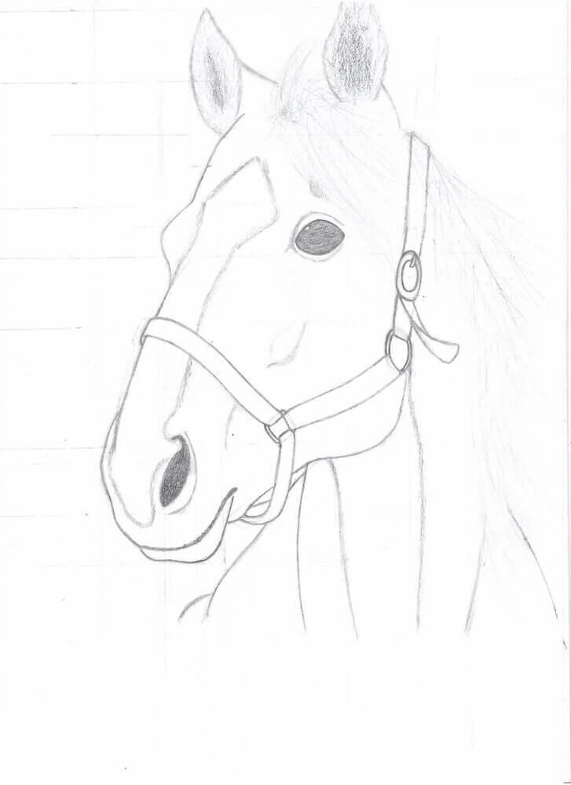

My Craft
Digital Art:
I have my own style that I am continuing to develop. I enjoy creating my own characters and doing fan art for my favorite book series and cartoons. These are created using Autodesk Sketchbook.


Traditional Art:
Sometimes I will dabble with traditional paper and pencil as well. The majority of drawings here are for my Drawing 1 class where I am learning the principles of drawing.

3D Modeling Projects:
I have started learning how to create 3D models with Blender. I am currently enrolled in a 3D Modeling 1 class where I have created the majority of these.


Animations:
In addition to the Claymation kit where it all began, I have moved into Maya 2019, Blender, DigiCel FlipBook, and FlipaClip.